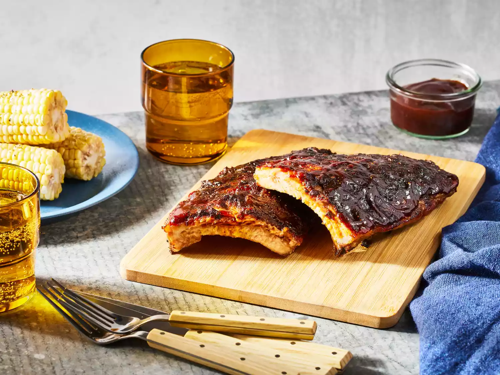

Ribs

description
This grilled baby back rib recipe calls for a savory homemade spice rub made with cumin, chili powder, paprika, salt, and pepper.
Ingredients
- 1 tablespoon ground cumin
- 1 tablespoon chili powder
- 1 tablespoon paprika
- salt and pepper to taste
- 3 pounds baby back pork ribs
- 1 cup barbeque sauce
Steps
- Make the spice rub.
- Trim the ribs, then season with the spice mix.
- Cook the ribs on the grill according to the detailed recipe below.
- Brush the grilled baby back ribs with barbecue sauce.
- Grill for five more minutes.
- Baby Back Ribs Spice Rub
- This grilled baby back rib recipe calls for a savory homemade spice rub made with cumin, chili powder, paprika, salt, and pepper.